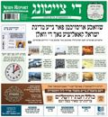
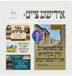
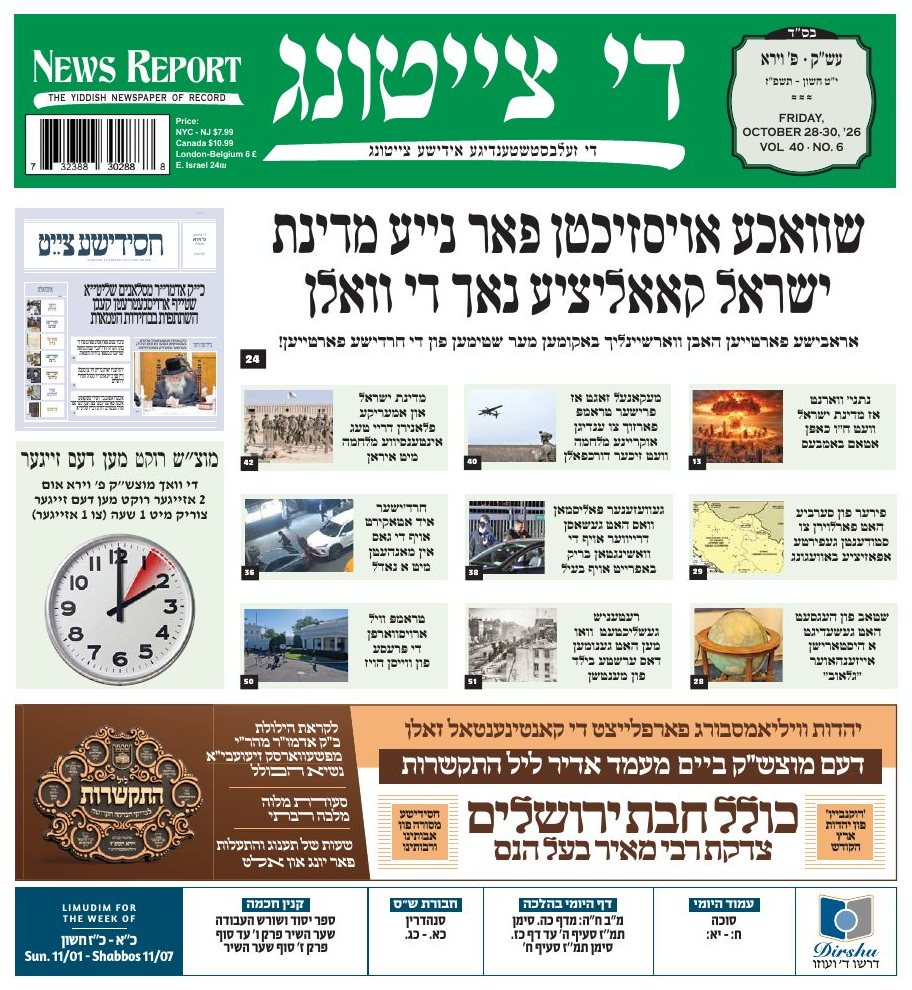
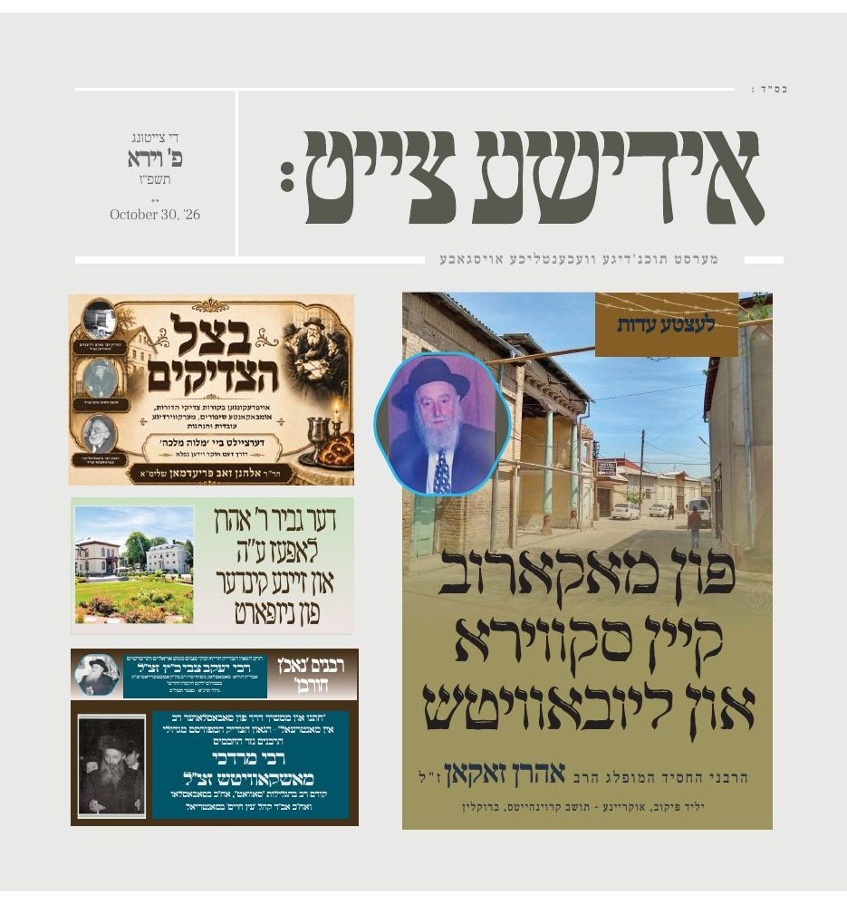
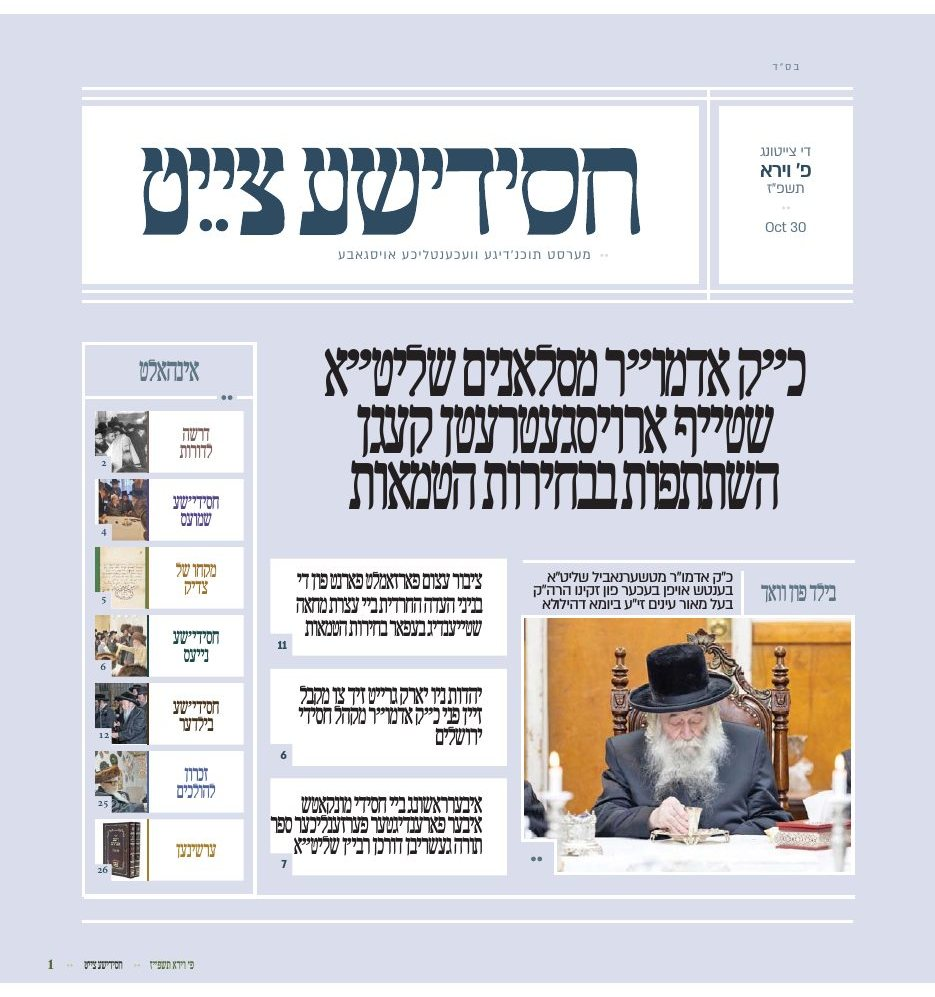

Di Tzeitung — The Independent Yiddish Newspaper — has been published every week in Brooklyn since 1988. Known as News Report, The Yiddish Newspaper of Record, it serves the Yiddish-speaking communities of Boro Park, Williamsburg, Kiryas Joel, Monsey and Lakewood, and reaches Yiddish readers across the United States, Canada, England, Belgium and Eretz Yisroel.



General news & politics, American and world news, the economy, and news from the heimishe community. The Yiddish newspaper of record, every Friday.